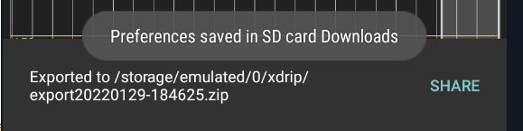
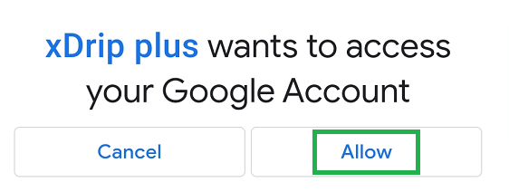
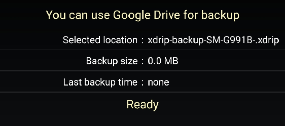
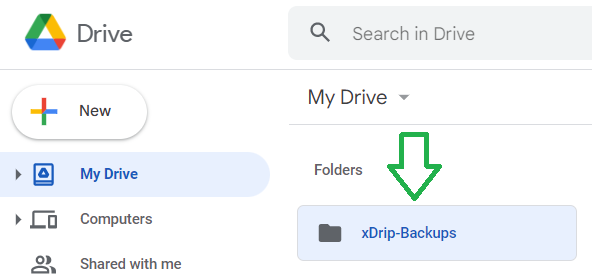
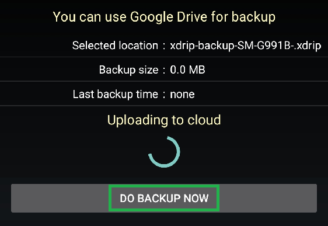
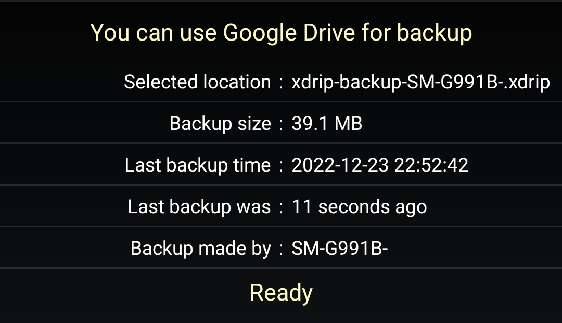

Reinstallation
Uninstall xDrip+⌁
Historical data
Uninstalling xDrip+ will also remove all data and settings without possible recovery.
Make sure you backup database and or all settings before.
It is recommended to upload data to Nightscout.
This shouldn't usually be necessary but you might need to uninstall xDrip+ to troubleshoot, or if you need to change it to or from a forked version. You can uninstall xDrip+ like any other Android app with a long press on the icon or from Android Settings -> Apps.
Reinstall xDrip+⌁
Follow this sequence:
- Backup (locally or in the cloud)
- Uninstall xDrip+
- Install xDrip+
- Restore (from local or cloud backup)
- Check all your settings and recreate your alarms
Backup⌁
You can either backup the database locally or in your Google Drive.
Backup the database⌁
The database contains all BG readings, treatments and notes. It is strongly recommended that you backup your database and keep a copy on another device if you want to keep your existing data and as a safety precaution against a phone loss, crash, ...
Using upload to Nightscout is also strongly recommended.
Exporting the database will also save settings.
From the main xDrip+ display select the upper right 3 dots menu, Import Export features, Export database.

Import Export features ►
Export database
The current database will be saved in /storage/emulated/0/xDrip or Internal Storage/xDrip
You need to authorize xDrip+ to access your phone memory.
You can make as many backups as your memory can store.
If you're fast enough to touch the SHARE writing before it disappears you can use your phone share options to send the database to another device or copy it to another location.

Your backup will be named exportYYYYMMDD-HHMMSS.zip with YYYY current year, MM month, DD day, and HHMMSS for hour minutes and seconds. This will allow you to have multiple backups identified by a unique timestamp.
If you want to keep a safe copy, send the file to yourself by email, save in on a cloud drive or copy it via USB to a computer.
It is an SQLite database you can browse with various utilities like SQLite Browser.
Restore⌁
You can restore the database from a local copy or from your Google Drive.
Restore settings⌁
When xDrip+ install is complete, if a backup is available, xDrip+ will propose to restore it automatically.
Select RESTORE SETTINGS
Backup detected
It looks like you maybe have a settings backup, shall we try to restore it?
NO RESTORE SETTINGS
If you don't see this message, restore them manually.
Restore a database⌁
Data loss
Restoring a database will delete all current data.
Restore a database with the same version of xDrip+ used to export it.
Make sure to backup the current database before restoring a database.
When xDrip+ install is complete, if a database backup is available, xDrip+ might propose to restore it automatically.
Make sure this is the database you want to restore then select RESTORE.
Restore backup?
Do you want to restore the backup?
file:export20210328-085436.zip
NO RESTORE
xDrip+ will confirm correct database restore.
Import result
Successfully imported database.
Note: the current database will be exported first, for safety, you will find it in the list named b4import and the date/time the import was done. This will allow you to recover it if necessary.
If you want to restore a specific backup, from the main xDrip+ display select the upper right 3 dots menu, Import Export features, Import database.
Import Export features ►
Import database
Instructions are displayed. You don't need to move the backup file if you didn't move it from another device, you don't need to unzip it. Be cautious on restoring a database with a different xDrip+ version: it is recommended that you install the xDrip+ version that was used to perform the export before importing, then you can update xDrip+.
Restore Instructions
WARNING: Restoring a database might cause SEVERE DATA LOSS. If ou don't know why you want to use the restore, don't use it. In regular operation of xDrip it is not needed. Just use it in case of previous data loss. If you are not sure what to do, in case you still wnt to use the restore, please ask an expert user.
Instructions:
Pleace the database you want to install in the directory 'xdrip' on your primary external storage (sometimes called 'internal storage' by the file browser). It is the same directory xDrip exports to.
In case you have a zipped export in this directory, unzip it (usually longpress->extract on the file in the file browser). If it gets extracted to a subdirectory it will still be found by the restore.
After having placed the file, start this restore routine. Scroll to the correct database name, click on it and follow the instructions on the screen,
ATTENTION: A database can only be restored if it has the same version number currently needed for this xDrip version. The database version numbermay change with xDrip updates. It is best to restore the database with the same version of the xDrip app it was exported and then update xDrip.
Select the database you want to import, look at the date and size (use the phone file browser) to be sure to pick the right one.
 Restore database
Restore database
export20220129-184625.zip
export20220129-184615.zip
b4import20220129-194141.zip
Once sure you're trying to restore the correct backup, Ok
Confirm Import
Do you want to import
'export20220129-184615.zip'?
This might negatively affect the data integrity of your system!
CANCEL OK
xDrip+ will confirm correct database restore.
Import result
Successfully imported database.
If you restored the wrong database, just redo the same steps and select the latest b4import version to roll back.
Android 11 and above
There is an issue with recent Android versions that will force you to restore the database several (3 to 4) times before you can see the full contents.
Cloud backup⌁
Cloud backup allows you to save a zipped file containing both database and settings in your Google Drive.
You must be logged in your Google account to use this feature.
Select Cloud Backup.
Import Export features ►
Cloud backup
Cloud Backup
You can use Google Drive for backup
Ready
In order to use this feature you should first select a backup location.
Select backup location⌁
Select Backup Location
Choose Backup File
Select Automatic for xDrip to manage files in Google Drive or select an alternate specific file to use if you need to restore from elsewhere.
AUTOMATICALLY MANAGE
USE ALTERNATE FILE
- Use alternate file will allow you to select a different folder and backup file when restoring.
- When doing your first backup, or when recovering an xDrip+ reinstall on the same phone, select Automatically manage.
You must authorize xDrip+ to access your Google Account. xDrip+ will only store and retrieve the backup file from your Google Drive. Nothing else.

Once done xDrip+ will confirm access:

xDrip+ will create a new folder named xDrip-Backups in the root of your Google drive.

Do backup now⌁
Once your backup location selected you can perform a backup. The backup file will be created on your device and then uploaded to your Google cloud drive.
Do Backup Now

You can check cloud backup status at the top of the current view.

You can make cloud backup execute automatically every day.
Do not enable this if you're using a limited mobile data plan.
 Automatic daily backup
Automatic daily backup
Restore from backup⌁
Restore From Backup
Data loss
Restoring a database will delete all current data.
Restore a database with the same version of xDrip+ used to export it.
Make sure to backup the current database before restoring a database.
Are you really sure?
Restoring a backup will erase your current settings and data with that from the backup.
Are you absolutely sure you wish to do this?
NO YES
Restore will copy the cloud database locally and replace the current database.
Once done, xDrip+ will restart.
New phone migration⌁
Perform the following operations:
On the old phone:
- Backup the database locally or in your Google drive.
-
If you won't use Google cloud backup, send yourself the database backup, or copy it to a computer.
-
If this old phone is connected to a sensor or a bridge, make sure to disable collection so that it won't interfere when you start using your new phone.
- If this old phone was master for xDrip+ sync followers, remove the master role.
On the new phone:
- Install the same version of xDrip+ you are using on the old phone.
-
If you didn't use Google cloud backup:
Backup the database (this is only needed to create the correct folders).
Copy the database file you sent yourself via mail, or from a computer to the right folder. -
Restore the database from the local backup or from your Google Drive.
- If the new phone is connected to a sensor or a bridge, connect it now. (Your data source will be correct but you'll need to recover connection).